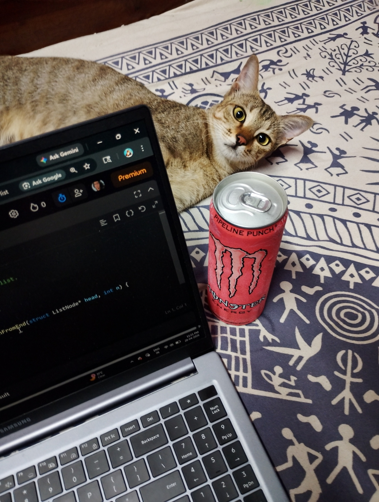
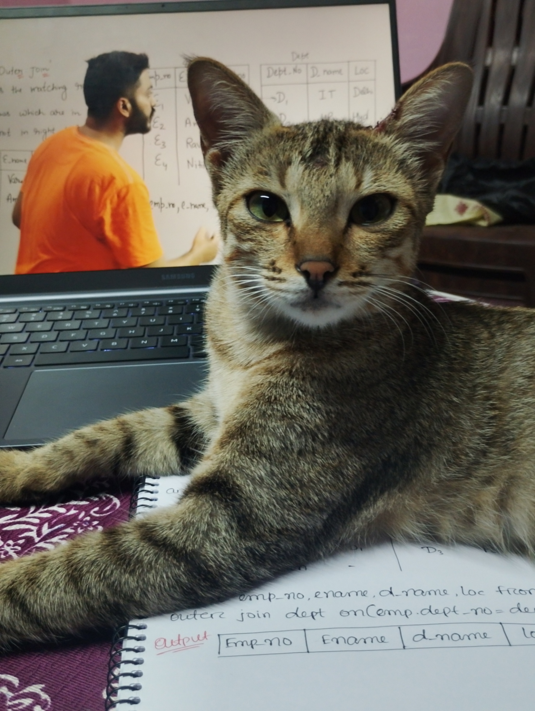

Coding Kitty

Judging Your Code.
Meet our chief code reviewer. She doesn't write a single line, yet somehow makes you feel like your logic is wrong. Spotted next to a Monster Energy can and an open IDE, she has reviewed more LeetCode sessions than any human alive — and she is not impressed.

Owns The Syllabus.
Our senior academic consultant. She sat through an entire SQL lecture, paws on the notes, eyes on the screen — and still looked smarter than everyone in the room. She does not take questions. She only takes naps on your notebook.